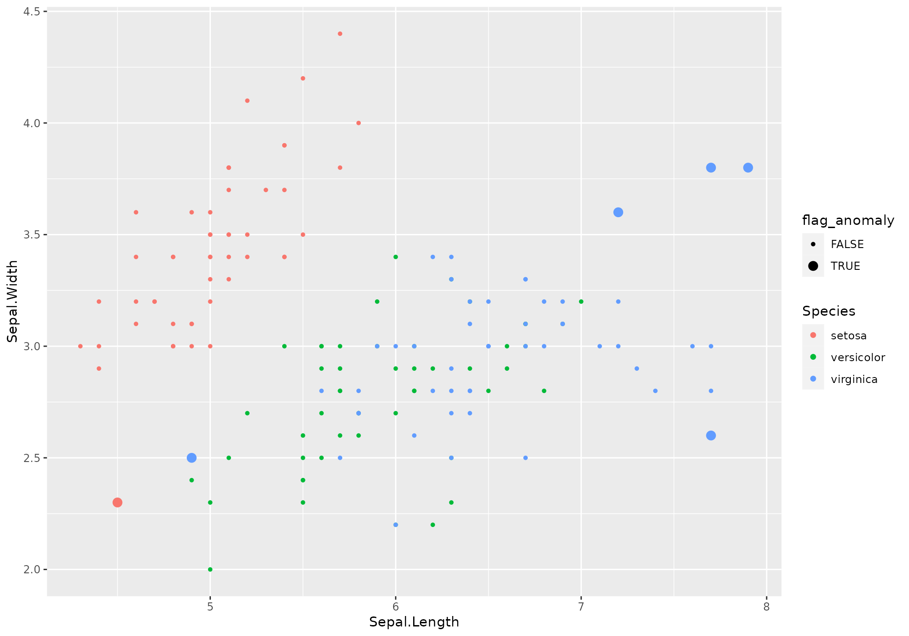

stranger for the impatient
WeLoveDataScience
2022-10-08
stranger_for_the_impatient.RmdI am so impatient: I want to Get some anomalies!
Okay… so you checked your favorite method is here. Let’s say
k-nearest neightbors as implemented in FNN package.
Very impatient people may detect some suspicious records using
lucky_odds - though we recommend being a little more
patient: unsupervised anomaly detection requires some patience.
Stop talking: show now!
Loading package.
library(stranger)FNN package will be automatically loaded. At this step
ensure it is currently available (installed) in your environment.
On our favorite classical dataset, we perform computations directly followed by visualisation of top 6 anomalies according to our knn approach.
anomalies <- iris %>% lucky_odds(n.anom=6, weird="knn", analysis.drop="Species")## Loading required package: FNN
anomalies %>% ggplot(aes(x=Sepal.Length,y=Sepal.Width,color=Species,size=flag_anomaly))+
geom_point()+
scale_size_discrete(range=c(1,3))
Uh? What happened?
Yeks! That is very few commands! And I don’t clearly see what happened. Can you explain?
Sure. You ask for 6 anomalies using knn weird method, as
computed on all numeric variables of iris dataset. As this
method is you preferred one, you may know it has / should have some
parameters.
We defined some default for you (no certitude they are the best ones…). Don’t worry, you will be able to modify them according to your preferences/needs.
There are several things that happened in the background -
corresponding to stranger analysis flow.
There is clearly no assurance that lucky_odds gives
you relevant anomalies, hence the lucky part of the name. Still
this function has some parameters that can give you some control on the
outputs but knowing the detailed process will allow you better
understand those parameters.
Anomaly detection process with stranger
In stanger, we have decomposed the process in some
components having associated verbs.
Data Preparation: you can’t just expect right anomalies if you don’t perform some preliminary steps on data. First, most of anomalies detection routines just can’t handle missing values. It is up to the user to handle that aspect before doing analysis (well… we propose two very simple methods for the very impatient user). Then, the process will be more relevant if you give as input variable having comparable ranges. For that, we propose to normalize or rescale within [0,1] interval. Other treatment we propose is to recode skewed distribution (taking the logarithm) and the usage of ITDF to recode categorical variables. Though we recommend to perform data preparation outside
strangerframework, the starting point that may already to what is recommended is thecrazyfyfunction. Invoking this verb is mandatory in our process.Computational part: on crazyfied data, one can apply one or several weirds methods to retrieve associated anomalies metrics. This could be done with either
strange(one weird method) orstranger(severall weirds methods at one) functions. Note that at this step we may end up with various metrics potentially incompatible (distance versus probability). This leads to the next step:Metrics standardisation and stacking In order to end up with comparable metrics, we normalize them depending on their algorithm and nature. In addition, we derive several global anomaly indicators by stacking the (eventual) multiple metrics you have (for instance averaging or taking the minimum of ranked metrics). This step is tackled by the
singularizefunction. This step is optional and user will also be able to derive anomalies from raw metrics values (for instance considering abod metric > 2).Get anomalies This tricky part of specifying a criteria that determined is handled by
get_anomaliesoras.anomaliesfor manual selection on raw metrics. In addition, one may want to merge anomalies back to initial data (or other ones), which can be done through Hadley verbfortify.
*Merge back with data Source data enrichment with
either metrics or anomaly flags is performed thanks to dedicated
fortify methods.
At every of those steps, user can fine-tune the analysis thanks to some parameters.
Here is an example of explicitely invoke the whole processes step by step.
iris %>% select(-Species) %>% # remove Species - meaningless to define anomalies
crazyfy() %>% # data preparation: add id, rescale [0,1], eventualy takes log
strange("knn",k=5) %>% # computes knn distances to 5 neighbors, aggregate distances with the mean (default)
singularize() %>% # required step if no manual selection
get_anomalies(nmin=6,nmax=10) %>% # ask for some anomalies
fortify(data=iris,colname="anomaly") %>% # enrich iris dataset with a flag called "anomaly" (0/1)
ggplot(aes(x=Sepal.Length,y=Sepal.Width,color=Species,size=anomaly))+ # let's view!
geom_point()+
scale_size_discrete(range=c(1,3))##
## Ordering: -1xN_anom_norm_avg and -1xN_anom_norm_avg
## 0 outliers found by default with this stacking and this method, which is not enough to satisfy nmin= 6 . Following most probable outliers are added to selection.
Got it! I want more!
Visualize anomalies
Understanding the reasons behind the score of a suspicious record is quite important to help people to trust the models, even if they don’t fully understand them. Interpretability is also critical to facilitate model validation and investiagation of suspicious cases. Unfortunately, scores made by machine learning models are usually difficult to explain, especially to non-data scientists. So, we will show in this section how this problem of interpretability can be partially adressed with few plots on surrogate models. We know that small regions of the conditional distribution, such as the k-nearest neighboors of an input record and their corresponding score, can likely be approximated by linear model. So by only focusing on that small region, we can use simple models (i.e. a surrogate model) to explain locally the more complex global model and visualize these simple models with basic plots. There are however no guarantees that the surrogate model is highly representative of the more complex model. So make sure that the results of the surrogate models are in line with human domain knowledge.
All the provided plots zoom on a specific record and its k-nearest neighbours, but with a different view each time.
Today, 5 visualizations are implemented;
- A hierarchical clustering, named “cluster”, showing among the top n-anomaly which records belongs to the same cluster a specific record. Finding the commun pattern amoung the cluster may lead to the orign of of the specifi record score.
- A dots plot, named “neighbours”, showing the relationship between the anomly score and each feature for the k nearest neighbours of a specific record.
- A bar chart, named “feature_importance”, showing how sensitive is the anomaly score of a specific record to each of feature.
- This may help to identify the features behind the score.
- A dots plot, names “score_decline”, showing the decrease in anomaly score among the k nearest neighbours of a specific record.
- The shape indicates how extrem and how frequent is the anomaly score of a speicif record amoung its neighbours.
- A Regression tree, named “regression_tree”, showing the roots to high score around a specific record.
Those functions are available though plot methods,
usable on the objects in various steps of the process.
For every graph, a given weird metric must be provided.
Let start for instance to build a stranger object called
is from iris dataset with all default (knn
weird with k=10).
Similarity between top anomalies
The option type = "cluser" shows a hierarchical cluster
among the top highest score around a specif record. The plot on the top,
called “Full Tree”, helps you to select the number of cluster according
to the zoom level of your interest. The plot on the bottom, called ”
Zooming-in”, zooms in the cluster in which the selected records belongs
to. Finding the commun pattern within a cluster (or sub-cluster) should
provide you insights on what has driven the score.
## [1] 132## Your data has been converted to a dataframe to be compatible with ggplot function.
Note on unshown default parameters
Call with all parameters (except the ones specific to the type of plot) could be - with default values used:
## [1] 132## Your data has been converted to a dataframe to be compatible with ggplot function.
In stranger default process, required id is
named .id, thus default value is suitable.
The parameter anomaly_id is used to pick one specific
anomaly as identified by its id. Using the default value
NULL the record having highest anomaly score (here based on
knn_k_10_mean) is used.
Univariate relationship
The option type = "neighbours" shows a dots plot with a
loess regression that emphasis the relationship between the anomly score
and each numerical feature for a specific record and its k-nearest
neighbours.
## [1] 132## Your data has been converted to a dataframe to be compatible with ggplot function.## `geom_smooth()` using formula 'y ~ x'Decision tree
The option type = "regression_tree" shows roots to lead
to high score locally around a specific record. The function use a
pruned rpart regression tree where score is used as the
dependent feature and all others feature as covariates. This approaches
has been inspired by the model [LIME] (https://arxiv.org/pdf/1602.04938.pdf).
## [1] 132## Your data has been converted to a dataframe to be compatible with ggplot function.## Loading required package: rpart
Variables importance
The option type = "feature_importance" shows a dotplot
sorted by decreasing variable importance. Such variable importance is
derived from fitting a random forest using anomaly id as a target.
Due to the approach, this graphic is not suited for small data (both in terms of records and columns).
Fitting random forest is performed with ranger package
for efficiency purpose.
Note that: - A list of id may be provided. - For that plot method,
score should be specified and is only used when anomaly_id
is NULL (to determine top anomaly).
## [1] 132## Your data has been converted to a dataframe to be compatible with ggplot function.## Loading required package: ranger
Score decline
The option type = "score_decline" shows a dots plot that
highlight the decline in anomaly score among the k nearest neighbours of
a specific record. The shape is an indicator of how extrem and how
frequent is the score of a specific record amoung its neighbours.
## [1] 132## Your data has been converted to a dataframe to be compatible with ggplot function.
To go further…
Explore additional vignettes. Next recommended vignette deals about
working with several methods at once: * Working with several
methods (stranger function, the possibility to merge and stack
(aggregate) methods with singularize.
Then you will be interested in knowing the list of available methods, which you can find there: * Stranger weirds methods (vignette) list all available weirds with some information on them.